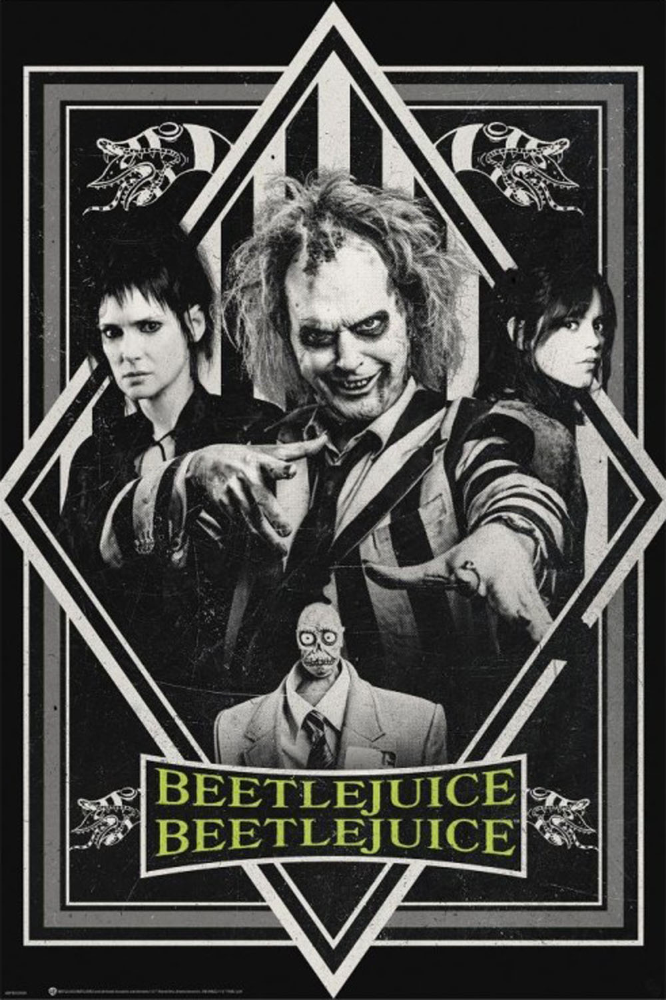
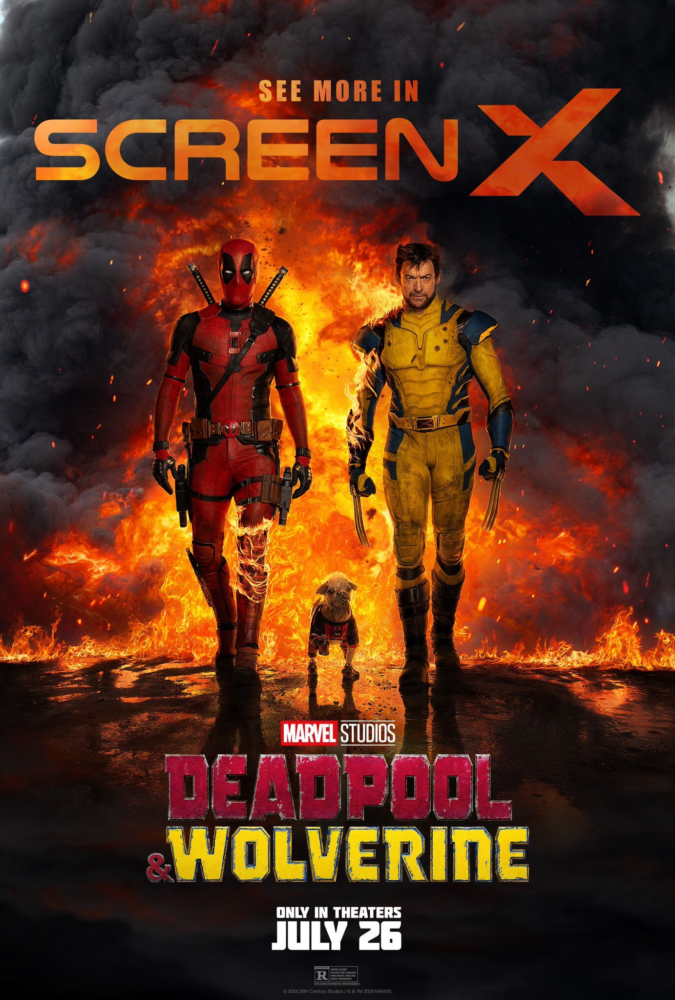

Бітлджюс знову тут! Після несподіваної сімейної трагедії три покоління
родини Дітц повертаються додому у Вінтер-Рівер. Життя Лідії, яку досі
переслідує Бітлджюс, перевертається догори дриґом. Її бунтівна
донька-підлітка Астрід знаходить на горищі таємничий макет міста і
випадково відкриває портал до потойбічного світу. Проблеми назрівають в
обох світах, тому це лише питання часу, коли хтось тричі вимовить ім'я
Бітлджюса. Щойно це станеться, пустотливий демон повернеться і влаштує
хаос у своєму фірмовому стилі.

«Кожен заслуговує на щасливий кінець»
Ведучи тихий спосіб життя, Вейд Вілсон потрапляє в організацію «Управління
часовими змінами» (УЧЗ), що змушує його повернутися до альтер-его Дедпула
та змінити історію за допомогою Росомахи.